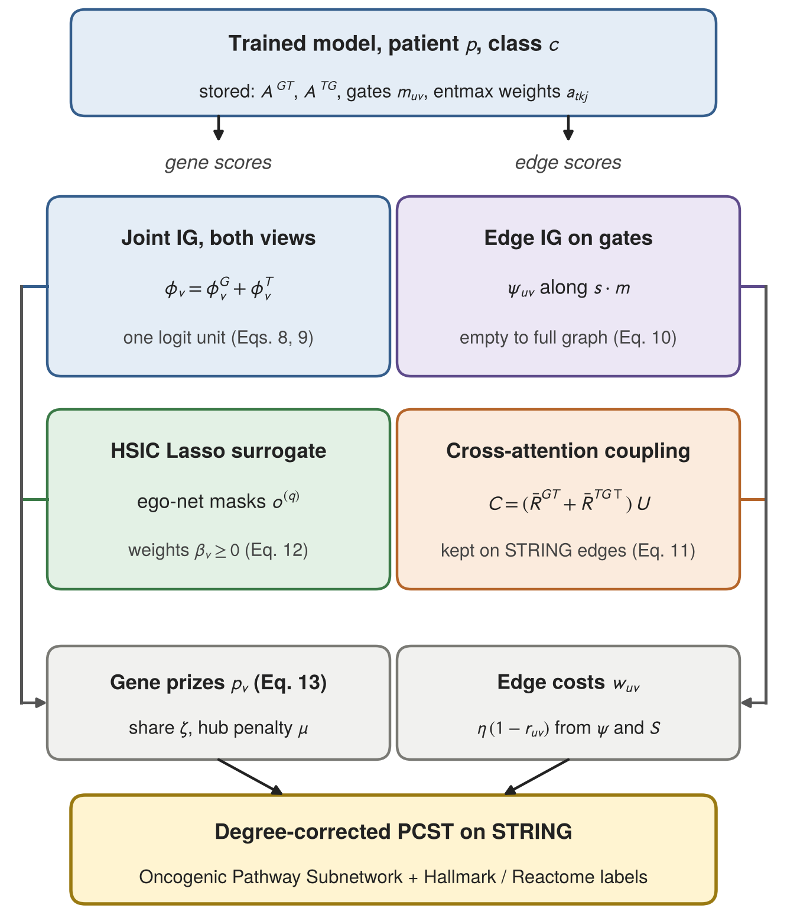

Which genes drove the call?
XplainOnco classifies breast cancer subtypes with a single model, then answers that question with one connected subnetwork drawn on the STRING protein interaction map.
Synthetic demo Planted ground truth, generated by scripts/export_site_data.py. Not a TCGA result.
Two model families, two explanations
Breast tumours that look alike under the microscope can behave very differently. Gene expression divides them into intrinsic subtypes (luminal A, luminal B, HER2-enriched, basal-like and normal-like) that differ in relapse risk and in which therapy works. The subtype call changes treatment, so a clinician or a laboratory wants to check why a tumour received it.
Trees cannot see the network
Boosted trees such as XGBoost are the default on gene expression tables and usually beat deep networks there. They treat genes as unrelated columns, so protein interactions go unused.
Graph networks need more patients
A graph neural network reads each gene in the context of its neighbours, but with a few hundred patients per class nothing guarantees it will beat a well-tuned tree model.
Two models, two explanations
The usual compromise trains both and averages them. That leaves SHAP for the trees and GNNExplainer for the graph, in different units, often ranking different genes first.
Can graph context act inside the tree model during training, so that one explanation, computed once, accounts for both?
XplainOnco is the proposed answer. Gene embeddings from a graph attention network move and sharpen the split thresholds of a differentiable tree ensemble. Because the whole model is one differentiable function, a single Integrated Gradients pass explains both views in a common unit, and the result is drawn back onto the interaction network the model used.
How it works
Each patient enters twice: as a gene graph on STRING interactions, and as a gene table in the same gene order. The two branches train together under one loss. Select a stage to see what it does, the equation behind it, and where it lives in the code.
Architecture
Redrawn from Figure 1 of the paper. Select any box.What is new
Three things at once, none of which the closest systems combine: graph context acts inside the tree model, one attribution is computed through the joint model, and the output is a connected subnetwork on a physical interaction map. The paper found no earlier model in which a graph network's node embeddings set the thresholds of tree splits on the same genes.
The graph moves the split
A soft decision tree routes a patient left or right with a probability that depends on one number: how far the weighted gene expression sits from a threshold, in units of a temperature. In a standard NODE ensemble both are learned constants. In XplainOnco they depend on the patient's graph embeddings of the genes that split reads.
So the same expression value can be cut differently depending on the state of the gene's interaction partners. The paper's example is a split on ESR1 expression whose threshold moves when the oestrogen receptor's partners are unusually active in that patient.
Node-conditioned soft split
Equations 3 to 5, with illustrative gains as in Figure 2 of the paperFor one split that reads a single gene with entmax weight a = 1, the shifted threshold and scaled temperature are:
With several genes, each split is conditioned on exactly the genes it reads, because the shift is weighted by the same entmax coefficients that select them. The output layers of the conditioning networks start at zero, so training begins as an ordinary NODE ensemble and the conditioning grows only as far as the loss rewards it. Switching it off is ablation A1.
The explanation is a subnetwork
After training, the attribution layer turns the model into one Oncogenic Pathway Subnetwork per patient or per subtype: 10 to 25 genes linked by documented interactions, each with its expression and mutation status attached. Genes the Steiner tree adds only to connect higher-scoring genes are drawn as dashed connectors, so a reader can tell them apart from genes the model scored highly.
The viewer below runs on a synthetic cohort with a planted answer, so you can check the method against something known. Turn on the planted truth to see which genes were meant to matter, and raise the hub penalty to watch the highly connected genes drop out.
Oncogenic Pathway Subnetwork viewer
Synthetic cohort, planted ground truth. Prizes are recomputed live from Equation 13.Four sources, one extraction
The attribution layer adds no trainable part to the classifier. Two sources score genes and two score edges, all from the same trained model. Gene scores become prizes, edge scores become costs, and a prize-collecting Steiner tree picks the connected subgraph that earns the most.
Joint Integrated Gradients
One path integral over both input views, measured in the logit of the predicted class. Each gene's score splits exactly into a graph-view part and a table-view part, which two separate explainers cannot provide. Equations 8 and 9.
Edge Integrated Gradients
Scales all edge gates from zero (no messages along STRING edges) to their trained values. The edge scores sum to the change in the class logit when the interaction graph is switched on. Equation 10.
HSIC Lasso surrogate
Masks a random gene together with its STRING neighbours, then fits a non-linear Lasso, so effects that appear only when two genes change together are not lost. Equation 12.
Cross-attention coupling
Attention maps weighted by their gradient, joined through which trees split on which genes, and kept only for pairs joined by a STRING edge. Equation 11.

Testing the explanation as strictly as the classifier
Every result uses nested, stratified cross-validation: five outer folds repeated three times, with an inner split for model selection. Every data-dependent step, including gene selection and the Integrated Gradients baseline, runs inside the training fold. Macro-F1 is the primary metric, because with luminal A at about half the cohort a model can ignore the smallest class and still score high accuracy.
| Hypothesis | Supported if | Counts against |
|---|---|---|
| H1 Classification | Macro-F1 above every baseline, significant for at least XGBoost and the graph network alone; largest per-class gains on HER2-enriched and normal-like. | Macro-F1 within noise of late fusion or MOGONET, with no gain on the small subtypes. |
| H2 Conditioning | Ablation A1 scores below the full model under the corrected t-test, and the conditioning outputs move clearly away from zero. | A1 equals the full model, or the conditioning outputs stay near zero. |
| H3 Explanation quality | Higher rank-biased overlap and lower deletion area than SHAP and GNNExplainer; scores decorrelate after weight randomisation. | Rankings no more stable than the comparisons, or unchanged after randomisation. |
| H4 Biological grounding | Connected subnetworks, expected pathways enriched at FDR below 0.05, and enrichment that survives removing the PAM50 genes. | Subnetworks that reduce to hubs, or enrichment that disappears without the PAM50 genes. |
Baselines and ablations
- B1 XGBoost on the retained gene table, explained with TreeSHAP
- B2 the graph attention branch alone
- B3 MOGONET, published architecture (specified in the paper, not implemented in this repository)
- B4 late fusion of B1 and B2, the design in the original abstract
- A1 conditioning removed, cross-attention kept
- A2 cross-attention replaced by concatenation
- A3 both removed
Explanation measures
- Stability: rank-biased overlap of gene rankings and Jaccard overlap of subnetworks across folds
- Faithfulness: deletion and insertion curves, plus retraining without the top 20 genes
- Sanity: cascading weight randomisation, after Adebayo et al.
- Grounding: Hallmark and Reactome enrichment, and a retrain with the 50 label-defining PAM50 genes withheld
Completeness check. Integrated Gradients scores should add up to the change in the class logit between the baseline and the patient. On this synthetic run, with 64 integration steps, the gap was between 0% and 5% of that change across the 15 patients checked, and under 0.3% with 256 steps (scripts/completeness_check.py). The demos on this page use 64 steps.
Faithfulness, run on the synthetic cohort
Genes are set to baseline in both views in ranked order, and the predicted-class probability is tracked.Weight-randomisation sanity check, on the synthetic cohort
Weights are re-initialised layer by layer from the output. A faithful explanation should decorrelate.What changed after the abstract feedback
The review of the first design suggested specific techniques. Nine are listed below with how each appears in XplainOnco. Four are used in a changed form, for reasons the paper gives in full; the short versions follow the table.
| Suggestion | In XplainOnco | Status |
|---|---|---|
| Joint graph-tabular fusion (MOGONET) | Graph and tree branches trained jointly under one loss; gene graphs instead of patient graphs; MOGONET kept as a baseline | Adopted, changed |
| Graph-tabular attention | Bidirectional cross-attention between gene and tree tokens (Eq. 6) | Adopted |
| GNN embeddings condition boosted-tree splits | Gene embeddings shift and scale NODE split thresholds (Eqs. 4, 5); XGBoost kept as a baseline | Adopted, changed |
| Trees condition the GNN (vice versa) | Tree-to-gene direction of cross-attention; unrolled conditioning left for later work | Partly adopted |
| Integrated Gradients | One pass over both views (Eqs. 8, 9) and over the edge gates (Eq. 10) | Adopted |
| Graph-LIME | HSIC Lasso surrogate over connected-neighbourhood perturbations (Eq. 12) | Adopted, changed |
| Cross-attention layer joining attributions | Gradient-weighted coupling matrix restricted to STRING edges (Eq. 11) | Adopted |
| Oncogenic Pathway Subnetwork on STRING | Degree-corrected prize-collecting Steiner tree with expression mapped onto nodes (Eqs. 13, 14) | Adopted |
| Separate SHAP and GNNExplainer | Removed from the method; run only as comparison explanations | Replaced |
Why not XGBoost splits?
XGBoost picks each split greedily over histogram bins, so the threshold has no gradient with respect to anything upstream. Node embeddings could not set it and IG could not pass through it. NODE makes the threshold a differentiable parameter.
Why only one direction of conditioning?
Letting tree outputs feed the graph attention layers would create a cycle inside one forward pass. Breaking it needs alternating, unrolled updates at roughly twice the training cost, so the tree-to-gene cross-attention direction stands in for it.
Why gene graphs, not patient graphs?
MOGONET's nodes are patients, so its graphs and biomarker ranking describe patient similarity. A subnetwork of genes on STRING needs genes as nodes. The idea of fusing views inside the model is kept.
What changed in Graph-LIME?
GraphLIME explains node predictions in terms of feature dimensions. XplainOnco predicts per patient graph with genes as features, so the HSIC Lasso surrogate is kept but the sampling becomes connected perturbations.
Closest systems
| System | Where graph and table meet | Explanation output |
|---|---|---|
| XGBoost + SHAP | No graph | Ranked gene list |
| GAT + GNNExplainer | No table model | Edge and feature masks |
| MOGONET | After per-view training, on label distributions; patient graphs | Features ranked by ablation |
| BGNN | Tree outputs become graph node features | Not addressed |
| GLRP | No table model | Patient subnetwork by relevance propagation |
| XplainOnco | Inside the trees (gene embeddings set split thresholds) and in cross-attention | One attribution; connected subnetwork on STRING |
Modules and where they live
The system splits into seven modules that follow the stages of Figure 1. The middle column is the status the paper reported at Review 1. This repository re-implements all seven from the paper's specification and tests them on the synthetic cohort. Running them on TCGA-BRCA is the next step.
| Module | Function | Status in the paper | In this repository |
|---|---|---|---|
| M1 Data | Download, matching, normalisation, batch correction, fold-internal gene selection | Complete | data/preprocess.py, data/tcga.py |
| M2 Graph | STRING subgraph and the shared gene ordering | Complete | data/preprocess.py |
| M3 Graph branch | GAT with edge gates and attention pooling | Trains | graph_branch.py |
| M4 Tree branch | NODE with conditioned thresholds and temperatures | Written; per-gene conditioning in progress | tree_branch.py, entmax.py |
| M5 Fusion | Bidirectional cross-attention and the loss of Eq. 7 | Written, not tuned | fusion.py, losses.py |
| M6 Attribution | Joint IG, edge IG, coupling, surrogate, Steiner tree | Specified | attribution/ |
| M7 Evaluation | Nested CV, baselines, ablations, explanation tests | XGBoost baseline fitted | evaluation/, train.py |
Limits
Of the method, from the paper
- TCGA-BRCA subtypes were assigned by applying PAM50 to expression, so the best a supervised model can do is reproduce a 50-gene rule. Withholding those genes reduces the problem without removing it.
- STRING records more interactions for well-studied genes. The degree penalty limits the effect but cannot add interactions that were never measured.
- Integrated Gradients depends on its baseline, and its straight-line path passes through profiles no real patient has. The surrogate gives a second view that does not rely on it.
- Coupling scores describe how information moved inside the model. A high score on a STRING edge does not show that two proteins interact in that tumour, and a subnetwork is a hypothesis, not clinical evidence.
Of this repository
- Nothing has been run on TCGA-BRCA. Every number and picture on this page comes from synthetic data.
- The MOGONET baseline and the GNNExplainer comparison are not included. TreeSHAP on XGBoost is.
- A small synthetic cross-validation run (3 folds, tiny settings) did not favour the model: XGBoost scored 0.998 macro-F1 against 0.815 for XplainOnco, and the ablations A1 to A3 could not be told apart from it. Too small to count for or against the paper's hypotheses; the README has the numbers.
- The paper's limma moderated t-test is replaced by an ordinary ANOVA F-test, since limma is an R package. The surrogate uses the Block HSIC Lasso estimator to stay tractable. Enrichment is an offline hypergeometric test against a GMT file you supply, not gseapy.
- The conditioning shift and log-temperature are bounded with tanh and the conditioning networks learn at one tenth of the base rate. Without that, the conditioned model overfit on small synthetic cohorts. The paper's equations do not bound them.
- ComBat correction is optional and corrects train and test samples together, so it is not strictly fitted on the training fold alone.
Run it
Install, run the tests, then reproduce the demo data this page uses.
# from the repository root
pip install -r requirements.txt
pip install -e .
python -m pytest tests# regenerates docs/data/demo.js (about 10 minutes on two CPU cores)
python scripts/export_site_data.py
# nested CV with baselines, ablations and explanation tests, on the synthetic cohort
python scripts/run_cv.py --quickFor TCGA-BRCA, put the expression, mutation, copy number, label and STRING files in the layout described in docs/DATA.md, then run python scripts/run_cv.py --data path/to/folder. Add --withhold-label-genes for the PAM50-withheld experiment.
References
The 59 references of the paper.
Show all references
- Adebayo, J., Gilmer, J., Muelly, M., Goodfellow, I., Hardt, M., and Kim, B. 2018. Sanity checks for saliency maps. In Advances in Neural Information Processing Systems 31 (NeurIPS 2018), 9505-9515.
- Alvarez-Melis, D. and Jaakkola, T. S. 2018. On the robustness of interpretability methods. arXiv preprint arXiv:1806.08049.
- Ambroise, C. and McLachlan, G. J. 2002. Selection bias in gene extraction on the basis of microarray gene-expression data. Proc. Natl. Acad. Sci. USA 99, 10 (May 2002), 6562-6566. doi.org/10.1073/pnas.102102699
- Arik, S. Ö. and Pfister, T. 2021. TabNet: attentive interpretable tabular learning. In Proceedings of the AAAI Conference on Artificial Intelligence 35, 8, 6679-6687.
- Chawla, N. V., Bowyer, K. W., Hall, L. O., and Kegelmeyer, W. P. 2002. SMOTE: synthetic minority over-sampling technique. J. Artif. Intell. Res. 16, 321-357. doi.org/10.1613/jair.953
- Chefer, H., Gur, S., and Wolf, L. 2021. Generic attention-model explainability for interpreting bi-modal and encoder-decoder transformers. In Proceedings of the IEEE/CVF International Conference on Computer Vision (ICCV 2021), 397-406. doi.org/10.1109/ICCV48922.2021.00045
- Chen, T. and Guestrin, C. 2016. XGBoost: a scalable tree boosting system. In Proceedings of the 22nd ACM SIGKDD International Conference on Knowledge Discovery and Data Mining (KDD '16), 785-794. doi.org/10.1145/2939672.2939785
- Chereda, H., Bleckmann, A., Menck, K., Perera-Bel, J., Stegmaier, P., Auer, F., Kramer, F., Leha, A., and Beißbarth, T. 2021. Explaining decisions of graph convolutional neural networks: patient-specific molecular subnetworks responsible for metastasis prediction in breast cancer. Genome Med. 13, Article 42. doi.org/10.1186/s13073-021-00845-7
- Colaprico, A., Silva, T. C., Olsen, C., et al. 2016. TCGAbiolinks: an R/Bioconductor package for integrative analysis of TCGA data. Nucleic Acids Res. 44, 8, e71. doi.org/10.1093/nar/gkv1507
- Cui, Y., Jia, M., Lin, T.-Y., Song, Y., and Belongie, S. 2019. Class-balanced loss based on effective number of samples. In Proceedings of the IEEE/CVF Conference on Computer Vision and Pattern Recognition (CVPR 2019), 9268-9277.
- Elloumi, F., Hu, Z., Li, Y., et al. 2011. Systematic bias in genomic classification due to contaminating non-neoplastic tissue in breast tumor samples. BMC Med. Genomics 4, Article 54. doi.org/10.1186/1755-8794-4-54
- Elmarakeby, H. A., Hwang, J., Arafeh, R., et al. 2021. Biologically informed deep neural network for prostate cancer discovery. Nature 598, 348-352. doi.org/10.1038/s41586-021-03922-4
- Fang, Z., Liu, X., and Peltz, G. 2023. GSEApy: a comprehensive package for performing gene set enrichment analysis in Python. Bioinformatics 39, 1, btac757. doi.org/10.1093/bioinformatics/btac757
- Fey, M. and Lenssen, J. E. 2019. Fast graph representation learning with PyTorch Geometric. In ICLR Workshop on Representation Learning on Graphs and Manifolds.
- Gillespie, M., Jassal, B., Stephan, R., et al. 2022. The Reactome pathway knowledgebase 2022. Nucleic Acids Res. 50, D1, D687-D692. doi.org/10.1093/nar/gkab1028
- Gillis, J. and Pavlidis, P. 2012. "Guilt by association" is the exception rather than the rule in gene networks. PLoS Comput. Biol. 8, 3, e1002444. doi.org/10.1371/journal.pcbi.1002444
- Goldman, M. J., Craft, B., Hastie, M., et al. 2020. Visualizing and interpreting cancer genomics data via the Xena platform. Nat. Biotechnol. 38, 675-678. doi.org/10.1038/s41587-020-0546-8
- Grinsztajn, L., Oyallon, E., and Varoquaux, G. 2022. Why do tree-based models still outperform deep learning on typical tabular data? In Advances in Neural Information Processing Systems 35, Datasets and Benchmarks Track.
- Guinney, J., Dienstmann, R., Wang, X., et al. 2015. The consensus molecular subtypes of colorectal cancer. Nat. Med. 21, 11, 1350-1356. doi.org/10.1038/nm.3967
- Hegde, C., Indyk, P., and Schmidt, L. 2015. A nearly-linear time framework for graph-structured sparsity. In Proceedings of the 32nd International Conference on Machine Learning (ICML 2015), PMLR 37, 928-937.
- Higgins, K., Laponogov, I., Veselkov, D., and Veselkov, K. 2026. Graph neural network explanations reveal a topological signature of disease-associated hubs in biological networks. arXiv preprint arXiv:2605.21502.
- Hoadley, K. A., Yau, C., Hinoue, T., et al. 2018. Cell-of-origin patterns dominate the molecular classification of 10,000 tumors from 33 types of cancer. Cell 173, 2, 291-304. doi.org/10.1016/j.cell.2018.03.022
- Hooker, S., Erhan, D., Kindermans, P.-J., and Kim, B. 2019. A benchmark for interpretability methods in deep neural networks. In Advances in Neural Information Processing Systems 32 (NeurIPS 2019).
- Huang, Q., Yamada, M., Tian, Y., Singh, D., and Chang, Y. 2023. GraphLIME: local interpretable model explanations for graph neural networks. IEEE Trans. Knowl. Data Eng. 35, 7, 6968-6972. doi.org/10.1109/TKDE.2022.3187455
- Ivanov, S. and Prokhorenkova, L. 2021. Boost then convolve: gradient boosting meets graph neural networks. In International Conference on Learning Representations (ICLR 2021).
- Jain, S. and Wallace, B. C. 2019. Attention is not explanation. In Proceedings of NAACL-HLT 2019, 3543-3556. doi.org/10.18653/v1/N19-1357
- Johnson, W. E., Li, C., and Rabinovic, A. 2007. Adjusting batch effects in microarray expression data using empirical Bayes methods. Biostatistics 8, 1, 118-127. doi.org/10.1093/biostatistics/kxj037
- Kipf, T. N. and Welling, M. 2017. Semi-supervised classification with graph convolutional networks. In International Conference on Learning Representations (ICLR 2017).
- Kokhlikyan, N., Miglani, V., Martin, M., et al. 2020. Captum: a unified and generic model interpretability library for PyTorch. arXiv preprint arXiv:2009.07896.
- Kontschieder, P., Fiterau, M., Criminisi, A., and Rota Bulò, S. 2015. Deep neural decision forests. In Proceedings of the IEEE International Conference on Computer Vision (ICCV 2015), 1467-1475. doi.org/10.1109/ICCV.2015.172
- Kumar, I. E., Venkatasubramanian, S., Scheidegger, C., and Friedler, S. 2020. Problems with Shapley-value-based explanations as feature importance measures. In Proceedings of the 37th International Conference on Machine Learning (ICML 2020), PMLR 119, 5491-5500.
- Liberzon, A., Birger, C., Thorvaldsdóttir, H., Ghandi, M., Mesirov, J. P., and Tamayo, P. 2015. The Molecular Signatures Database hallmark gene set collection. Cell Syst. 1, 6, 417-425. doi.org/10.1016/j.cels.2015.12.004
- Loshchilov, I. and Hutter, F. 2019. Decoupled weight decay regularization. In International Conference on Learning Representations (ICLR 2019).
- Lundberg, S. M. and Lee, S.-I. 2017. A unified approach to interpreting model predictions. In Advances in Neural Information Processing Systems 30 (NeurIPS 2017), 4765-4774.
- Nadeau, C. and Bengio, Y. 2003. Inference for the generalization error. Mach. Learn. 52, 3, 239-281. doi.org/10.1023/A:1024068626366
- Parker, J. S., Mullins, M., Cheang, M. C. U., et al. 2009. Supervised risk predictor of breast cancer based on intrinsic subtypes. J. Clin. Oncol. 27, 8, 1160-1167. doi.org/10.1200/JCO.2008.18.1370
- Perez, E., Strub, F., de Vries, H., Dumoulin, V., and Courville, A. 2018. FiLM: visual reasoning with a general conditioning layer. In Proceedings of the AAAI Conference on Artificial Intelligence 32, 1, 3942-3951.
- Perou, C. M., Sørlie, T., Eisen, M. B., et al. 2000. Molecular portraits of human breast tumours. Nature 406, 6797, 747-752. doi.org/10.1038/35021093
- Peters, B., Niculae, V., and Martins, A. F. T. 2019. Sparse sequence-to-sequence models. In Proceedings of the 57th Annual Meeting of the Association for Computational Linguistics (ACL 2019), 1504-1519. doi.org/10.18653/v1/P19-1146
- Petsiuk, V., Das, A., and Saenko, K. 2018. RISE: randomized input sampling for explanation of black-box models. In Proceedings of the British Machine Vision Conference (BMVC 2018).
- Popov, S., Morozov, S., and Babenko, A. 2020. Neural oblivious decision ensembles for deep learning on tabular data. In International Conference on Learning Representations (ICLR 2020).
- Ramirez, R., Chiu, Y.-C., Hererra, A., et al. 2020. Classification of cancer types using graph convolutional neural networks. Front. Phys. 8, Article 203. doi.org/10.3389/fphy.2020.00203
- Ribeiro, M. T., Singh, S., and Guestrin, C. 2016. "Why should I trust you?": explaining the predictions of any classifier. In Proceedings of the 22nd ACM SIGKDD International Conference on Knowledge Discovery and Data Mining (KDD '16), 1135-1144. doi.org/10.1145/2939672.2939778
- Ritchie, M. E., Phipson, B., Wu, D., et al. 2015. limma powers differential expression analyses for RNA-sequencing and microarray studies. Nucleic Acids Res. 43, 7, e47. doi.org/10.1093/nar/gkv007
- Rudin, C. 2019. Stop explaining black box machine learning models for high stakes decisions and use interpretable models instead. Nat. Mach. Intell. 1, 206-215. doi.org/10.1038/s42256-019-0048-x
- Sanchez-Vega, F., Mina, M., Armenia, J., et al. 2018. Oncogenic signaling pathways in The Cancer Genome Atlas. Cell 173, 2, 321-337. doi.org/10.1016/j.cell.2018.03.035
- Schulte-Sasse, R., Budach, S., Hnisz, D., and Marsico, A. 2021. Integration of multiomics data with graph convolutional networks to identify new cancer genes and their associated molecular mechanisms. Nat. Mach. Intell. 3, 6, 513-526. doi.org/10.1038/s42256-021-00325-y
- Shwartz-Ziv, R. and Armon, A. 2022. Tabular data: deep learning is not all you need. Inf. Fusion 81, 84-90. doi.org/10.1016/j.inffus.2021.11.011
- Sundararajan, M., Taly, A., and Yan, Q. 2017. Axiomatic attribution for deep networks. In Proceedings of the 34th International Conference on Machine Learning (ICML 2017), PMLR 70, 3319-3328.
- Szklarczyk, D., Kirsch, R., Koutrouli, M., et al. 2023. The STRING database in 2023: protein-protein association networks and functional enrichment analyses for any sequenced genome of interest. Nucleic Acids Res. 51, D1, D638-D646. doi.org/10.1093/nar/gkac1000
- The Cancer Genome Atlas Network. 2012. Comprehensive molecular portraits of human breast tumours. Nature 490, 7418, 61-70. doi.org/10.1038/nature11412
- Tuncbag, N., Gosline, S. J. C., Kedaigle, A., Soltis, A. R., Gitter, A., and Fraenkel, E. 2016. Network-based interpretation of diverse high-throughput datasets through the Omics Integrator software package. PLoS Comput. Biol. 12, 4, e1004879. doi.org/10.1371/journal.pcbi.1004879
- Varma, S. and Simon, R. 2006. Bias in error estimation when using cross-validation for model selection. BMC Bioinformatics 7, Article 91. doi.org/10.1186/1471-2105-7-91
- Vaswani, A., Shazeer, N., Parmar, N., et al. 2017. Attention is all you need. In Advances in Neural Information Processing Systems 30 (NeurIPS 2017), 5998-6008.
- Veličković, P., Cucurull, G., Casanova, A., Romero, A., Liò, P., and Bengio, Y. 2018. Graph attention networks. In International Conference on Learning Representations (ICLR 2018).
- Wang, T., Shao, W., Huang, Z., Tang, H., Zhang, J., Ding, Z., and Huang, K. 2021. MOGONET integrates multi-omics data using graph convolutional networks allowing patient classification and biomarker identification. Nat. Commun. 12, Article 3445. doi.org/10.1038/s41467-021-23774-w
- Webber, W., Moffat, A., and Zobel, J. 2010. A similarity measure for indefinite rankings. ACM Trans. Inf. Syst. 28, 4, Article 20. doi.org/10.1145/1852102.1852106
- Yamada, M., Jitkrittum, W., Sigal, L., Xing, E. P., and Sugiyama, M. 2014. High-dimensional feature selection by feature-wise kernelized Lasso. Neural Comput. 26, 1, 185-207. doi.org/10.1162/NECO_a_00537
- Ying, R., Bourgeois, D., You, J., Zitnik, M., and Leskovec, J. 2019. GNNExplainer: generating explanations for graph neural networks. In Advances in Neural Information Processing Systems 32 (NeurIPS 2019), 9240-9251.